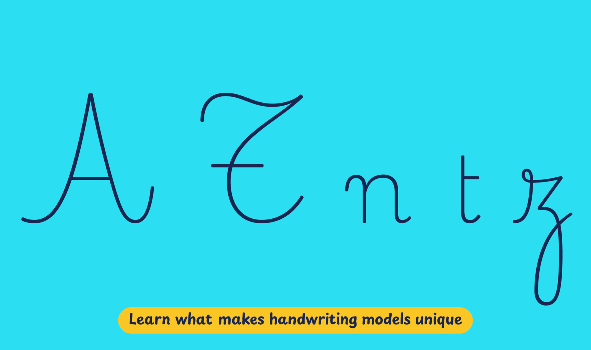

The Dutch-French language divide in Belgium, a phenomenon with roots stretching back to the Middle Ages, continues to be relevant in the country today. Traditions of handwriting education exemplify this circumstance and reflect the country's historical ties to France and the Netherlands. Regardless of the handwriting model adopted, students learn print-style script letters in kindergarten and progress to connected letters in primary school. In Flanders, there is a preference for sloped continuous cursive writing, reminiscent of Dutch handwriting models, whereas the French-speaking community in the Walloon region opts for upright cursive writing, a style that enjoys popularity in France. This diversity in handwriting education is a direct response to Belgium's rich linguistic culture, leading to the introduction of a second official language early in the school years.
Playwrite België Walloon is a variable font with a weight range from Thin (100) to Regular (400), and supports over 150 Latin-based languages.
To contribute, see github.com/TypeTogether/Playwrite.
This upright cursive style features very long extenders and is executed at a slow speed. The capitals are decorative, with features like crossbars in 'T' and 'Z', and a vertical spine in 'S'. The lowercase letters adhere to a continuous, fully connected cursive style, incorporating loops, knots, and curved entry strokes. Notable details include a flat-topped 'z' with a knot and a 't' with a single-sided crossbar, enhancing the ornate nature of this script.

Playwrite België Walloon appears in font menus with a two-letter country code ‘BE’ and a the ‘WAL’ abbreviation Playwrite BE WAL. It features four styles: Thin, ExtraLight, Light, and Regular.
The download .zip file includes the variable font and standard static ttf fonts for each style.
The Playwrite school fonts are based on the findings of Primarium, a groundbreaking educational effort that documents the history and current practice of handwriting models taught to primary school students worldwide. This typographic engine serves teachers, educators, and parents by generating localized libre fonts. These Playwrite fonts are complemented by Playpen Sans, an informal and fun typeface designed for annotations, instructions, and student notes – that also includes emojis.
For more information about the Primarium project, visit primarium.info and to learn more about handwriting education in australia, see primarium.info/countries/belgium
Windows: Download the font file to your computer. Navigate to where you saved the font file and double-click it to open. Click the "Install" button at the top of the font preview window. The font is now installed and ready to be used across your apps.
macOS: After downloading the font file to your Mac, right-click it in Finder and select "Open With" > "Font Book". Then, click "Install Font" in the font preview window that pops up. The font is now installed and ready to be used across your apps.
The Playwrite font family uses complex OpenType features to generate connected writing. Some common applications require these features to be manually activated.
Note: This font family doesn't include Bold or Italic styles, so please avoid applying them in text editors. If you use the common 'B' and 'I' buttons, you will automatically generate low-quality styles.
Microsoft Word: Go to Format in the Menu bar, select Font, and then the Advanced tab. Activate "Contextual Alternates" and "Kerning for fonts below" to apply these settings to all text sizes.
LibreOffice: To select the different styles, go to Format in the Menu bar, select Character, and use the Typeface menu.
Adobe InDesign: Open the Paragraph Panel and select Adobe "World-Ready Paragraph Composer" from the contextual menu.
Adobe Illustrator: Navigate to Preferences > Type, check the "Show Indic Options" box, and close preferences. Then open the Paragraph Panel and select "Middle Eastern Composer" from the contextual menu.
Adobe Photoshop: Access the Paragraph Panel, then choose "World-Ready Layout" from the contextual menu.
The above instructions are also available in PDF format here